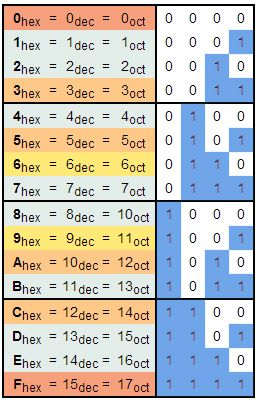
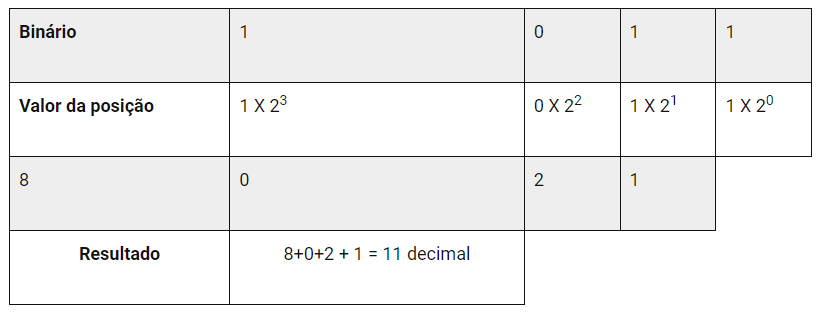
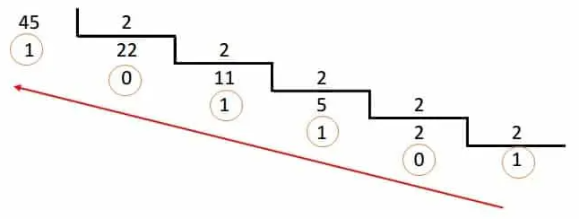
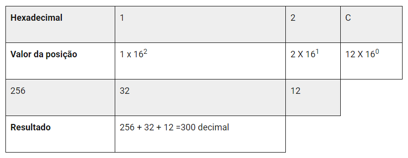
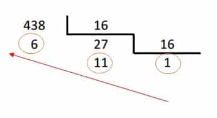

cos
Os sistemas de numeração são usados para representar a quantidade de determinados elementos.
O sistemas mais usado pelas pessoas é o decimal. Esse sistema é formado por 10 algarismos.
Para a eletrônica digital e sistemas de computação os sistemas binário, hexadecimal e octal
são muito utilizados.
Entender as diferentes formas de representação numérica é muito importante para se trabalhar
com eletrônica e programação. A seguir apresentaremos os detalhes de cada um desses sistemas
de numeração mencionados.
➤ Sistema de numeração binário
O sistema binário é usado pelos computadores é e constituído de dois dígitos o 0 e o 1.
A combinação desses dígitos leva o computador a criar várias informações: letras, palavras,
textos, cálculos.
A criação do sistema de numeração binária é atribuída ao matemático alemão Leibniz.
➤ Sistema de numeração hexadecimal
O Hexadecimal é um sistema numérico de base 16, denotado utilizando os símbolos 0–9 e A–F.
É também o sistema de numeração utilizado na programação de microprocessadores, em especial
nos equipamentos e máquinas de estudo e sistemas de desenvolvimento.
O que é hexadecimal?
Trata-se de um sistema de numeração posicional que representa os números em base 16, sendo assim,
utilizando 16 símbolos. Este sistema utiliza os símbolos 0, 1, 2, 3, 4, 5, 6, 7, 8 e 9 do
sistema decimal, além das letras A, B, C, D, E e F.
A nomenclatura "hexadecimal" é usada devido aos termos "hexa" que significa "6" e "deci" que
representa "10", portanto indicando a base 16. Cada número hexa significa quatro bits de dados binários.
Um byte é criado por 8 bits e é representado por dois dígitos hexa. Já um word possui 16 bits e
pode ser representado por quatro dígitos hexa. Um duplo word, dword, possui 32 bits e é
representado por oito dígitos hexa. A grande vantagem de utilizar o sistema hexadecimal
torna-se clara à medida que os números vão se tornando maiores.
Este sistema é muito utilizado para demonstrar números binários de uma forma mais compacta,
visto ser muito mais fácil converter hexadecimal em binários e vice-versa.
Após a utilização de todos os dígitos hexadecimais, a repetição começa com a adição de outro
dígito, assim como nos demais sistemas numéricos. Dessa forma a sequência continua assim: (...)
10, 11, 12, 13, 14, 15, 16, 17, 18, 19, 1A, 1B, 1C, 1D, 1E, 1F, 20, 21, 22, 23... Com a adição
dessas 6 letras no sistema hexadecimal, é possível aumentar em até 256 combinações distintas,
bem mais que as 100 combinações diferentes possíveis no sistema decimal.
Para transformar um binário em hexadecimal é necessário separar o binário em grupos de 4 bits,
iniciando-se pela direita, visto que um dígito em hexadecimal pode representar um número
binário de 4 dígitos.
Tabela de conversão hexadecimal
Veja abaixo uma tabela de conversão entre os sistemas hexadecimal, decimal, octal e binário:

➤ Conversão de binário para decimal
Como já vimos no artigo anterior, o sistema binário só possui 2 algarismos.
Cada posição tem um peso de uma potência de 2 (base do sistema binário). Sendo assim,
para se converter um número de binário para decimal, deve-se multiplicar cada bit pela
potência de sua posição e somar os resultados.
Por exemplo, a conversão do número 10112 para decimal é feita da seguinte forma:

➤ Conversão de decimal para binário
Para realizar a conversão de decimal para binário, realiza-se a divisão sucessiva por 2
(base do sistema binário). O resultado da conversão será dado pelo último quociente (MSB)
e o agrupamento dos restos de divisão será o número binário.
Por exemplo, vamos converter o número 45 em binário:

A leitura do resultado é feita do último quociente para o primeiro resto. Sendo assim, o resultado da conversão
do número 45 para binário é: 101101₂.
➤ Conversão de hexadecimal para decimal
A conversão de hexadecimal para decimal segue o mesmo princípio apresentado para o sistema binário.
Multiplica-se cada dígito pela potência de 16 relativa à posição e somam-se os resultados:
Por exemplo, a conversão do número 12C₁₆ para decimal:

➤ Conversão de decimal para hexadecimal
Para converter um número decimal em hexadecimal realiza-se a divisão sucessiva por 16 (base do sistema hexadecimal),
semelhante à conversão de decimal para binário.
Por exemplo, vamos converter o número 438 em hexadecimal:
